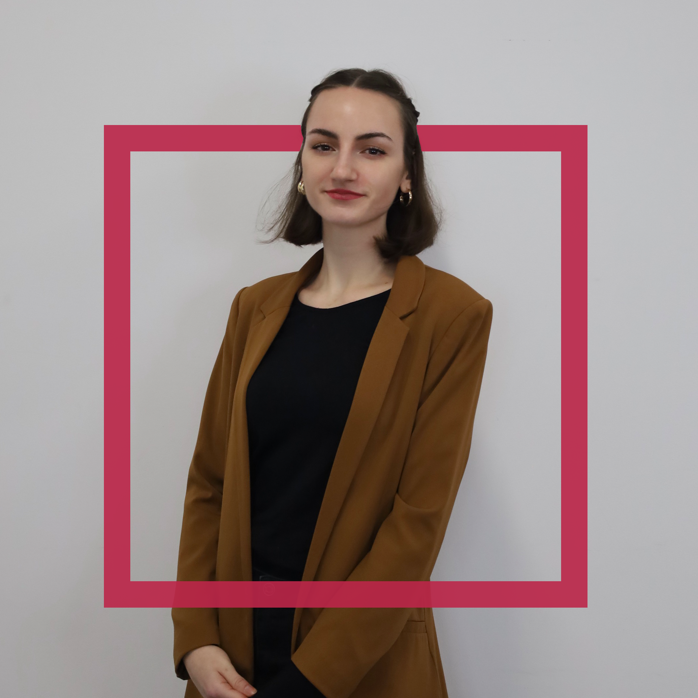

Agata Sewostjanik
Jestem studentką architektury wnętrz na piątym roku studiów magisterskich, skupiającą się na najnowszych trendach designu wnętrz. Moje podejście łączy funkcjonalność z nowoczesnym stylem, tworząc unikalne przestrzenie, które nie tylko zachwycają estetyką, ale także spełniają potrzeby użytkowników. Posiadam umiejętność wczuwania się w preferencje klientów, co pozwala mi dostosować projekty do ich stylu życia. Gotowa jestem wykorzystać moją wiedzę i kreatywność, aby przekształcić każde wnętrze w ergonomiczną przestrzeń.
Joanna Czajkowska
Jestem absolwentką Wydziału Architektury z tytułem magistra inżyniera architekta. Projektowanie jest moją pasją, a specjalizuję się w tworzeniu wnętrz i elewacji o charakterze minimalistycznym i industrialnym. W mojej pracy kładę duży nacisk na harmonię między funkcjonalnością a estetyką.

Lena Stasiełuk
Jestem absolwentką Architektury z tytułem magistra inżyniera architekta, rozwijam się także w budownictwie. Podczas studiów projektowałam kawiarnie, łazienki, kuchnie, salony i sypialnie, kierując się stylem minimalistycznym, skandynawskim i japandi, używając ciepłych stonowanych kolorów i naturalnych materiałów. Poza architekturą interesuję się grafiką, informatyką i pole dance.
Monika Siennicka
Absolwentka architektury z tytułem magistra inżyniera architekta. Specjalizuję się w projektowaniu przestrzeni terapeutycznych, hobbystycznych i biur, również domowych. Moje podejście do projektowania jest zróżnicowane, nie ograniczam się do konkretnego stylu. Dodatkowo, oferuję doradztwo mieszkaniowe, pomagając zidentyfikować potencjalne problemy przed inwestycją, abyś był dobrze poinformowany przed podejmowaniem decyzji.
Aleksandra Olizarowicz
Jestem magistrem inżynierem z dziedziny architektury wnętrz i krajobrazu. Moje doświadczenie obejmuje projektowanie parków kieszonkowych, mieszkań, ogrodów oraz przestrzeni publicznych, takich jak cukiernie, kawiarnie i restauracje. Specjalizuję się także w projektowaniu mebli, przykładając dużą uwagę do roli światła. Materiały, których używam w moich projektach, to głównie drewno, metal i szkło, co tworzy harmonijną i funkcjonalną estetykę. Moje podejście opiera się na precyzji, estetyce i zrozumieniu potrzeb klienta, tworząc unikalne i dopasowane projekty.
Wiktoria Kulgawczuk
Jestem studentką IV roku architektury wnętrz, a moje podejście do projektowania opiera się na przekonaniu, że dobre wnętrze to nie tylko harmonijne połączenie stylu, kompozycji i funkcjonalności, ale także forma opowiadania historii. Z pasją projektuję przestrzenie, zdając sobie sprawę, że wpływają one istotnie na samopoczucie i zachowanie ludzi. Specjalizuję się w naturalnych, minimalistycznych wnętrzach, lubię wyzwania i trudne projekty, szukając zawsze unikalnych rozwiązań.